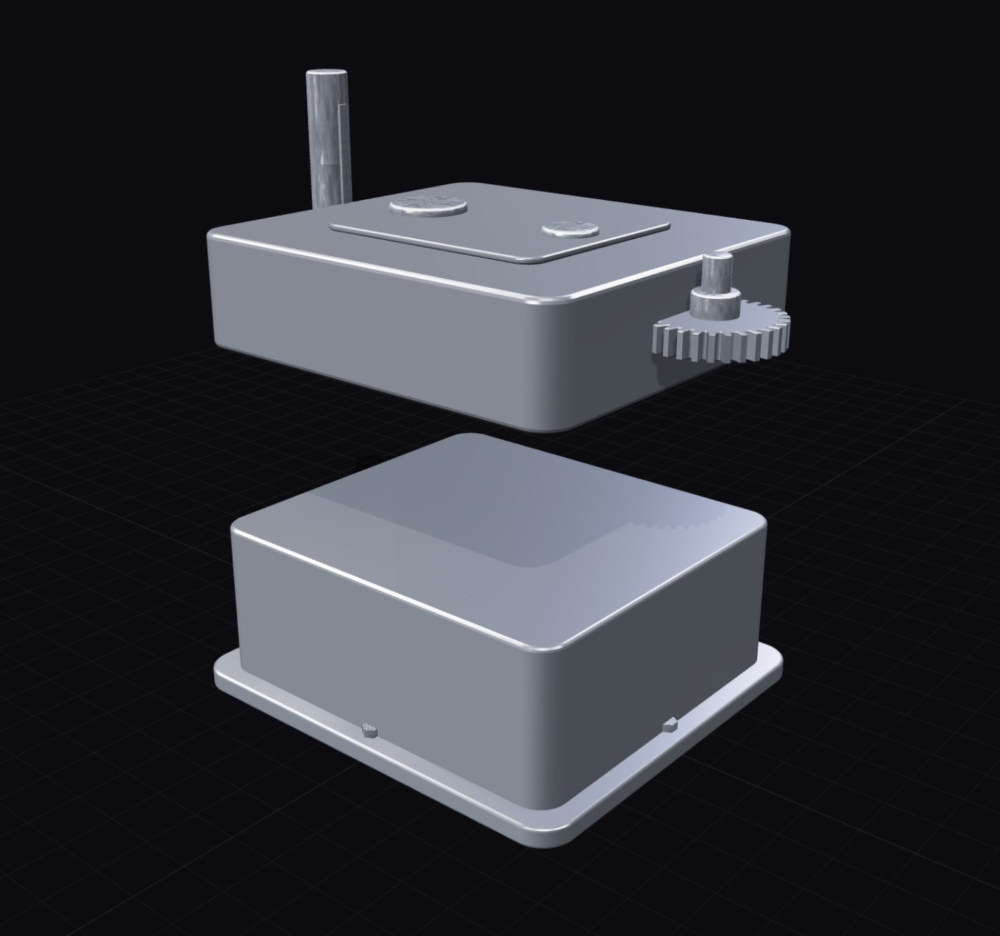

아이디어를 형상으로 만드는 구간인 컨셉 모델링, 형상 검토, 데이터 준비를 AI가 맡습니다. 아래는 데모에서 그대로 체험할 수 있는 기능들입니다.

"500ml 스테인리스 텀블러, 슬림하게"라고 쓰면, AI가 용량에서 직경·높이를 역산해 밀리미터 사양서를 만들고 그 치수대로 3D를 생성합니다. 근거가 설계 노트로 함께 제공됩니다.
하우징 베이스, 커버, 샤프트, 체결부품이 분리된 파트 트리로 생성됩니다. 분해/조립 애니메이션, 파트별 표시·숨김, 클릭 선택을 지원합니다.
생성 후에도 "높이를 160mm로 낮추고 캡은 검정 ABS로"처럼 말로 수정합니다. 요청이 파라미터·재질 변경으로 번역되어 즉시 반영됩니다.
본체 폭, 벽 두께, 볼트 수, 필렛 반경까지 모든 치수가 파라미터입니다. 슬라이더를 움직이면 관련 형상이 함께 다시 계산됩니다.
제품 유형별로 큐레이션된 금속·플라스틱·고무·글라스 재질을 파트 단위로 적용하고, 자체 텍스처 맵(알베도·노멀·러프니스) 업로드로 커스텀 재질을 만듭니다.
보유한 GLB·OBJ·STL을 업로드하면 같은 파이프라인에 올라갑니다. 파트 인식, 재질 변경, 폴리곤 최적화, CAD 변환을 동일하게 사용합니다.
파트별 솔리드가 유지되는 STEP(AP214), 레이어 분리 DXF, 파트 계층이 보존되는 GLB·OBJ, 3D 프린팅용 STL로 내보냅니다. 내보내기 검증 기능으로 뷰포트와의 일치를 수치로 확인합니다.
테셀레이션 품질 3단계와 감축률 슬라이더로 삼각형 수를 조절합니다. 시각화·웹 뷰어용 경량본과 정밀 검토용 원본을 한 모델에서 뽑습니다.
기능이 있는 제품은 움직입니다. 기어는 잇수 비율대로 회전하고, 캡은 풀리고, 리드는 열립니다. 뷰어에서 클릭 한 번으로 확인합니다.
GPU 서버 1대부터 시작하는 설치형 패키지. 폐쇄망 반입, SSO/LDAP 연동, 감사 로그를 지원하며 외부 통신 없이 동작합니다.
사용 시나리오·동시 사용자 수 기준으로 서버 사양을 산정하고 보안 요건을 확인합니다.
사내 서버 또는 폐쇄망에 설치하고, 설계팀 대상 온보딩 세션을 진행합니다.
실제 설계 과제로 파일럿을 수행하고 소요 시간·산출물 품질 보고서를 제공합니다.